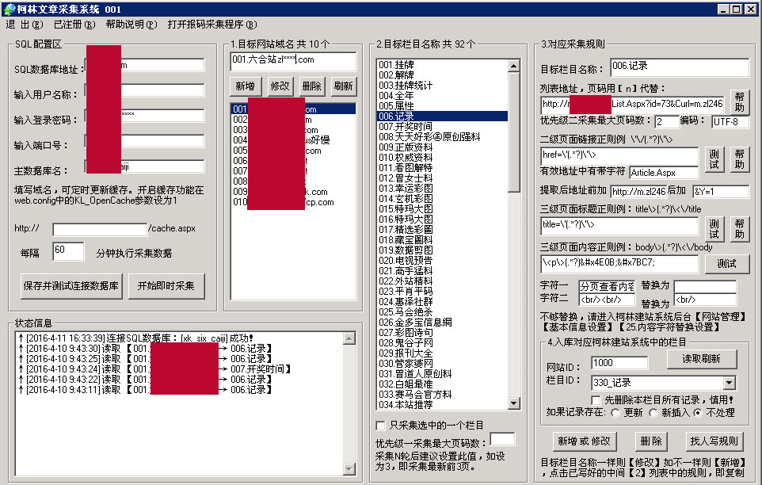
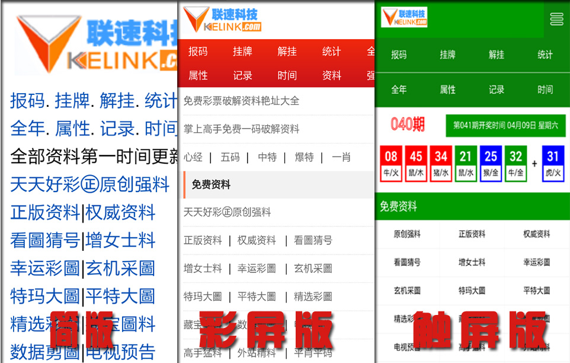

采文章界面：

- 目前一个软件界面只能对一个网站进行采集。
- 如需要多个站同时进行，请进入程序目录：
- 复制 KelinkCaiJi001.exe 将001改成002，并运行之。以此类推！
- 采集规则放到软件目录下的Data目录即可。未注册版只能一个，注册版无限制。
- 采到的内容如果有图片地址，会将第一张图设为文章缩放图。
- 文章采集演示地址触屏版V3：http://xk-six2.kelink.com/wapindex-1000-0.html?sid=-3
- 文章采集演示地址彩版V2：http://xk-six2.kelink.com/wapindex-1000-0.html?sid=-2
- 文章采集演示地址简版V1：http://xk-six2.kelink.com/wapindex-1000-0.html?sid=-1
